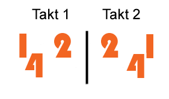

For I think moving the feet it sensefull and doing this with music makes even more sense I am quite fond of dancing. I got some latin roots (father) so the choice was obvious to do this mainly with salsa (not to be confused with latin standard, which I do not like actually). Best way to learn salsa is to grasp the basic step and moving hips, knees and then having a look at some other people in bars or clubs. This way you learn it by doing and looking instead of thinking about it too much. Though I must admit that it is easier for women to get into for they often aren’t the dance leaders.
Basic Step (Cuban style)
For getting you curious here an introduction of the cuban style salsa step moving. The whole step-chain is two times 4/4 beats. The numbers on the pic represent the beat (4,1,2,3/4,1,2,3). The place of the numbers form the place of the feet. Very important that the step starts on beat 4 and not on 1. Following this the break is on the 3.

Good clubs (in Berlin)
- Havanna: Good location with good dancers and very good music. Though it is more recommendable for people who can already dance. Very expensive and often very full. Always on wednesdays, fridays and saturdays.
- Soda-Club: Nice location in Berlin Prenzlauer Berg, though can get quite full. Open on Thursday and Saturday.
- Hoppetosse: Here you can dance on a parking boat open-air which is just perfect in summer, great view on the river and sunset. Tuesdays.
- Salsa am Osthafen: Great place, good music and very nice people, especially good for beginners because they do not need to feel too embarassed. Ambience is the most easy going in Berlin. Always on saturdays.
There is also a good resource for information from DJ Michael. He hosts the site Salsa Berlin which is a very nice one. And besides: He studied information technologies on Berlin Technical University too :)